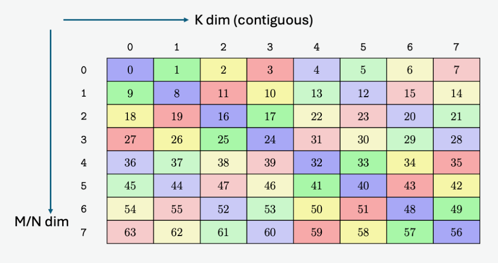

数据布局及其记号#
概览
数据布局描述张量的逻辑索引如何映射到物理位置。这个映射既影响程序是否读取正确的数据，也决定 global memory 访问能否合并、shared memory 是否产生 bank conflict，以及 tile 是否符合特定硬件单元要求的格式。
Shape-Stride 模型通过 shape 和 strides 定义这一映射；tiling 仍然使用同一个模型，只是把原始索引拆成更多坐标。命名轴进一步把物理位置扩展到 TMEM、warp lanes 和 registers，replication 与 offset 则分别表示数据复制和位置平移。
Swizzle 在保持 tile 逻辑结构不变的情况下重排 shared memory 地址。对于匹配的元素宽度、对齐方式和访问模式，XOR swizzle 可以将访问分散到不同 memory banks，从而避免 bank conflict。
同一组数字，如果以不同的物理排列方式写入内存，在同一块 GPU 上的运行速度可能相差一个数量级。
原因在于，张量的逻辑索引并不说明它的字节在物理上实际存放在哪里。硬件对这种位置关系非常敏感：它决定 32 个 lane 的 load 能否合并成一次 transaction，还是分散成 32 次；决定这些地址会落到不同的 memory bank，还是撞到同一个 bank 并被串行化；甚至还决定一个 tile 的字节排列是否符合 Tensor Core 能够读取的格式。
机器学习程序通常用逻辑 shape 来描述张量。数据布局补上了缺失的物理部分：它说明带有逻辑索引 (i, j, …) 的元素实际存放在哪里，可以是在 memory 中、register 中，也可以是在其他硬件存储空间中。
下面先从 Shape-Stride 模型出发，再把同一套记号推广到 TMEM、register fragment 和多设备布局。最后介绍 swizzling，看看它如何通过重排地址来改善同一个 tile 的按行和按列访问。
Shape-Stride 模型#
在介绍 GPU 特有的布局之前，我们先从 Shape-Stride 模型开始。shape 描述张量在每个维度上的大小，strides 描述逻辑索引在某个维度上增加 1 时，物理位置要前进多少个元素。我们把这对信息写成 S[(shape) : (strides)]。要找一个逻辑索引对应的位置，只需把索引和 strides 做点积。例如，一个 row-major 的 4×4 矩阵可以写成：
S[(4, 4) : (4, 1)]
addr(i, j) = i·4 + j·1
PyTorch 和 NumPy 中的 tensor 本质上也使用这个模型：一块扁平的 storage buffer，加上一组描述如何解释这块 storage 的 shape 和 strides。
import torch
t = torch.arange(12).reshape(3, 4)
t.shape # torch.Size([3, 4])
t.stride() # (4, 1) ← 正是 S[(3, 4) : (4, 1)]
t 的底层 storage 仍然是一维的：
[0, 1, 2, 3, 4, 5, 6, 7, 8, 9, 10, 11]
这里的 t 使用 S[(3, 4) : (4, 1)]：每行占 4 个连续元素，列方向的相邻元素在 storage 中也相邻。很多 view 类操作只需要更换 shape 和 strides，而不需要重新排列这些元素。以二维 tensor 的转置为例，PyTorch 中的 permute(1, 0) 等价于 t.T：
tt = t.permute(1, 0) # 或 t.T
tt.shape # torch.Size([4, 3])
tt.stride() # (1, 4) ← strides 交换了，但没有搬数据
tt.untyped_storage().data_ptr() == t.untyped_storage().data_ptr()
# True，底层仍然是同一块 storage
转置后的 view 使用 S[(4, 3) : (1, 4)]，因此 tt[i, j] 的地址偏移为 i·1 + j·4，正好对应原来 t[j, i] 的位置。对 contiguous tensor 做 view，或者在布局兼容时做 reshape，机制相同。NumPy 也采用这一模型，只是它的 .strides 以字节而不是元素为单位。
Tile Layout#
GPU kernel 很少一次处理完整矩阵，通常会将矩阵划分成更小的 tiles。例如，可以把一个 8×8 矩阵划分成 2×4 的 tiles，让各个 tile 按 row-major 顺序排列，并让每个 tile 内部的元素也按 row-major 顺序连续存储。
下图先展示这个例子在逻辑矩阵和物理内存中的排列。
用 Layout 函数表示 Tiling#
要描述上面的排列，需要同时知道 tile 在矩阵中的位置，以及元素在 tile 内的位置。先从原矩阵中的逻辑坐标 (i, j) 出发，把它写成 8×8 矩阵中的扁平索引：
x = i·8 + j
划分成 2×4 的 tiles 后，行坐标会拆成 4 个 tile rows 和 tile 内的 2 个 rows；列坐标会拆成 2 个 tile columns 和 tile 内的 4 个 columns。因此，用来分解 x 的 shape 是：
(4, 2, 2, 4)
layout 按照这组 shape 对 x 做反展平（unflatten）：
(c0, c1, c2, c3) = unflatten(x; 4, 2, 2, 4)
c0 = x // 16
c1 = (x // 8) % 2
c2 = (x // 4) % 2
c3 = x % 4
代入 x = i·8 + j 后：
c0 = i // 2 = tile_row
c1 = i % 2 = row_in_tile
c2 = j // 4 = tile_col
c3 = j % 4 = col_in_tile
接下来确定这四个坐标如何映射到物理地址。每个 tile 包含 2×4=8 个元素，每个 tile row 包含 2 个 tiles；tile 内部每行包含 4 个连续元素。因此：
最终，这个 layout 写成：
S[(4, 2, 2, 4) : (16, 4, 8, 1)]
回到上面的交互图，点击任意 cell，可以将图中显示的 tile 坐标和物理地址与上面的 unflatten 过程及 \(f_D(x)\) 对照。
一般的 Layout 函数#
刚才的计算可以推广到一般的 Shape-Stride layout：
S[(e0, e1, ..., en-1) : (s0, s1, ..., sn-1)]
对于扁平逻辑索引 \(x\)，先按照 shape 将它反展平为多个坐标：
再将这些坐标与 strides 做点积：
因此，shape 决定 \(x\) 被拆成哪些坐标，strides 决定这些坐标如何映射到物理位置。上面的 tile layout 正是取 shape (4, 2, 2, 4)、strides (16, 4, 8, 1) 后得到的结果。
命名轴：从线性地址到物理坐标#
前面的 layout 都把元素映射到一个线性 memory 地址。但 GPU 上有些物理位置本来就需要多个坐标才能确定，TMEM 和 register fragment 是两个直接的例子。
TMEM 的二维物理空间#
Blackwell 的 TMEM 天然是一个二维地址空间。每个 CTA 对应 128 个 lane rows 和最多 512 个 32-bit columns；要确定其中一个位置，必须同时给出 lane 坐标和 column 坐标。

普通线性 memory 的单一地址轴无法区分这两个维度。为了表示 TMEM 的二维结构，我们分别用 @TLane 和 @TCol 表示它的 lane 轴和 column 轴。例如，一个 128×256 accumulator tile 可以写成：
S[(128, 256) : (1@TLane, 1@TCol)]
(row, col) = unflatten(x; 128, 256)
f_D(x) = row@TLane + col@TCol
这里的 \(f_D(x)\) 不再返回一个整数地址，而是同时给出 TLane=row 和 TCol=col。相比之下，普通的线性 memory 只有一个地址轴 @m；显式写出这个 tag 后，一个 row-major 的 8×16 tile 是：
S[(8, 16) : (16@m, 1@m)]
(row, col) = unflatten(x; 8, 16)
f_D(x) = (row·16 + col)@m
Register Fragment#
命名轴的另一个来源是 Tensor Core 使用的 register fragment。以一个 m8n8-style fragment 为例：逻辑上它包含一个 8×8 tile，共 64 个元素；物理上这些元素分布在一个 warp 的 32 个 lanes 中，因此每个 lane 持有两个 fragment slots。
这时只知道 lane ID 还不能唯一确定一个元素。它的物理位置由两部分组成：由哪个 lane 持有，以及位于该 lane 的哪个 fragment slot。对于这里的布局，这两个坐标是：
laneid = row·4 + col//2
reg = col%2
下图展示了这个 8×8 tile 在 warp lanes 和 registers 上的分布。
例如，点击上图左侧 Logical 8×8 Matrix 中第 r5 行、第 c3 列的 cell 43，可以看到逻辑元素 (5, 3) 由 lane 21 持有，并位于该 lane 的 fragment slot 1。
这两个位置分别用 @laneid 和 @reg 表示：@laneid 是一个 warp 内的 lane ID，@reg 是该 lane 内的 fragment slot。这里的 @reg 表示 layout 中的 lane-local 坐标；具体指令仍可能把多个低精度元素打包到同一个 32-bit hardware register 中。
这个 8×8 tile 可以写成：
S[(8, 4, 2) : (4@laneid, 1@laneid, 1@reg)]
(c0, c1, c2) = unflatten(x; 8, 4, 2)
= (row, col//2, col%2)
f_D(x) = (c0·4 + c1)@laneid + c2@reg
Replication 与 Offset#
TMEM 中 Scale Factors 的跨 Warp 广播#
Block-scaled MMA 不是一种特定的数据类型，而是一类使用分块缩放因子的低精度 MMA。Blackwell 上常见的格式包括 MXFP8 和 NVFP4。就本节讨论的局部 block scale 而言，MXFP8 使用 FP8 数据，沿 K 维每 32 个元素共享一个 E8M0 scale factor；NVFP4 使用 E2M1 FP4 数据，每 16 个元素共享一个 E4M3 scale factor。
无论采用哪种格式，基本思路都相同：沿 K 维将 A、B 划分为若干 scale blocks，并为每个 block 配置一个 scale factor，用来恢复该块的数值尺度。设每个 scale block 包含 K_blk 个 K 元素，那么元素 k 所属 block 的索引为：
sfk = k // K_blk
从数学上看，block-scaled MMA 等价于按对应的 scale factor 对 A、B 的元素进行缩放后完成矩阵乘加：
A_real[m, k] = A_low[m, k] · SFA[m, k // K_blk]
B_real[k, n] = B_low[k, n] · SFB[n, k // K_blk]
D = C + A_real × B_real
SFA[m, sfk] 是 A 的第 m 行、第 sfk 个 K-scale block 对应的 scale factor；SFB[n, sfk] 是 B 的第 n 列、第 sfk 个 K-scale block 对应的 scale factor。
下面用 NVFP4 的 SFA 说明 scale factors 如何放入 TMEM。例子取 M = 128、SF_K = 4，每个 scale factor 占 1 byte，因此 SFA 的逻辑形状为 128×4，总大小为：
128 rows × 4 bytes/row = 512 bytes
负责搬运这组数据的 tcgen05.cp.32x128b.warpx4 以 .32x128b 为基础 shape：32 条 local lanes，每条 lane 搬运 128 bits，也就是 16 bytes。它的基础 tile 同样包含：
32 local lanes × 16 bytes/lane = 512 bytes
数据量正好相等。不过，基础 tile 只有 32 个 lane 位置，不能让 128 个 m 各占一条 lane。因此要把 m 拆成两部分：
local_lane = m % 32
Mgroup = m // 32
local_lane 选择 32 条 lanes 中的一条，Mgroup 再选择这条 lane 上的 TCol。对于固定的 local lane l，四组 SFA rows 按下面的方式并排存放：
TCol 0: SFA[l, 0:4]
TCol 1: SFA[l + 32, 0:4]
TCol 2: SFA[l + 64, 0:4]
TCol 3: SFA[l + 96, 0:4]
每一行 SFA 含有 4 个 1-byte scale factors，正好填满一个 32-bit TCol cell；sfk = 0…3 选择其中的 byte。因此，完整的打包规则为：
local_lane = m % 32
Mgroup = m // 32
TCol = Mgroup
byte = sfk
byte_offset = TCol·4 + byte
例如，SFA[64, 2] 的 local_lane = 0、Mgroup = 2，所以它位于 local lane 0、TCol 2 的第 2 个 byte。SFA[0, 2]、SFA[32, 2]、SFA[64, 2] 和 SFA[96, 2] 都使用 local lane 0，但分别位于 TCol 0、1、2 和 3；它们不会占用同一个 TMEM cell。
到这里，一份完整的 128×4 SFA 已经被打包成一个 32-lane 基础 tile。Block-scaled tcgen05.mma 将 TMEM lanes 按四个 32-lane partitions 读取，并要求每个 partition 都在相同的 local-lane、TCol 和 byte 位置上提供完整的 scale-factor tile。PTX ISA 因此规定 SFA 和 SFB 要复制到所有四个 partitions：
partition 0: TLane 0…31
partition 1: TLane 32…63
partition 2: TLane 64…95
partition 3: TLane 96…127
.warpx4 会把刚才的 32-lane 基础 tile multicast 到这四个 partitions。令 p = 0…3 表示 partition 编号，则物理 Lane 坐标为：
TLane = local_lane + 32·p
TCol 和 byte 不变。于是 SFA[64, 2] 最终出现在 (TLane, TCol, byte) 为 (0,2,2)、(32,2,2)、(64,2,2) 和 (96,2,2) 的四个位置。
这里出现了两个互不相关的“四组”。四个 Mgroup 是对 128 个逻辑 m 的打包，它们沿 TCol 展开；四个 partitions 是同一份打包结果的物理副本，它们沿 TLane 展开。交互图把这两个方向同时画了出来。
SFB 遵循同样的硬件规定，只是逻辑索引换成 B 的列 n。例如，当 N = 128、SF_K = 4 时，它使用 local_lane = n % 32、TCol = n // 32、byte = sfk 完成基础打包，再由 .warpx4 复制到四个 32-lane partitions。
用 Replication 捕获多个物理位置#
前面的 \(f_D(x)\) 只能为逻辑元素 \(x\) 给出一个位置，无法表示 .warpx4 产生的额外副本。为此，我们在基础 layout 后面加入 R[shape : strides]。例如，R[n : s@axis] 引入一个独立的副本坐标 r = 0…n-1，并产生偏移 r·s@axis。
回到前面的 TMEM 例子，沿 TLane 轴的四份复制可以写成：
S[(32, …) : (1@TLane, …)] + R[4 : 32@TLane]
这里的 R[4 : 32@TLane] 让 r 依次取 0、1、2 和 3，产生 0、32、64 和 96 四个 TLane 偏移。R[...] 不增加新的逻辑数据，只记录这些副本所在的位置。
下图同时展示了 SFA 如何压入一个 32-lane 基础 tile，以及 .warpx4 如何将这份 tile 复制到四个 TMEM partitions。
点击任意 SFA cell，可以查看它在 32-lane 基础 tile 中的位置，以及 .warpx4 复制后所在的四个 TMEM partitions。
GPU Mesh 中的 Replication 与 Offset#
同一个 replication 结构也可以描述多设备布局。GPU mesh 把多张 GPU 沿一个或多个逻辑设备轴排布成网格。例如，一个 2×2 GPU mesh 包含四张 GPU，每张 GPU 都可以用 (@gpuid_x, @gpuid_y) 坐标确定。
先定义一个沿 @gpuid_y 分片的基础布局：
base = S[(2, 4, 8) : (1@gpuid_y, 8@m, 1@m)]
把这三个逻辑坐标记为 (y, row, col)。例如，元素 (1, 2, 3) 在基础布局中的位置是：
gpuid_y = 1
m = 2·8 + 3 = 19
在这个基础上加入 replication：
base + R[2 : 1@gpuid_x]
Element (1, 2, 3) → devices {(0, 1), (1, 1)}, local offset = 19
R[2 : 1@gpuid_x] 让这个元素同时出现在 gpuid_x = 0 和 gpuid_x = 1 上。相比之下，加入固定 offset：
base + O[1@gpuid_x]
Element (1, 2, 3) → device (1, 1), local offset = 19
这个固定 offset 只会把基础位置沿 @gpuid_x 平移 1，不会产生副本。下图将这两种情况与 fully-sharded 布局放在一起比较，可以在 fully-sharded、shard + replica 和 shard + offset 三种模式之间切换。
点击图中的任意 cell，可以查看哪些设备持有对应的逻辑元素。
Swizzle Layout#
本章最后要介绍的是 swizzle layout，它主要用于缓解 shared memory 中的 bank conflict。
现代 NVIDIA GPU 的 shared memory 被划分为 32 个 memory banks，连续的 32-bit words 依次映射到这 32 个 banks。对于字节地址 addr，本章使用的 bank 编号可以写成：
bank = (addr // 4) % 32
如果同一批访问指向同一个 bank 中的不同地址，硬件就必须分批处理，这就是 bank conflict。如果多个 lanes 读取同一个地址，硬件可以通过 broadcast 返回数据，不会产生冲突。
一条 warp 指令可能因访问宽度而分成多个处理批次，Nsight Compute 将这样的批次称为 wavefront。对于连续且对齐的访问，一个 wavefront 最多处理 128 bytes，也就是 32 个 banks 各提供 4 bytes。因此，每个 lane 读取 4 bytes 时，32 个 lanes 位于同一个 wavefront；读取 8 bytes 时，每 16 个 lanes 为一组；读取 16 bytes 时，每 8 个 lanes 为一组。Bank conflict 只在同一个 wavefront 内判断。例如，在 8-byte 访问中，lane 0 和 lane 16 即使访问同一个 bank，也不会相互冲突，因为它们属于不同的 wavefronts。
在 tensor 程序中，同一个 tile 往往会被沿不同方向访问。处理矩阵时，我们既可能连续读取一行，也可能取出一列。但简单布局通常只能让其中一种访问方式高效。以 row-major tile 为例，同一行的相邻元素地址连续，通常会分散到不同 bank；而同一列的相邻元素之间隔着一个 row stride。如果这个 stride 与 bank 的映射周期重合，多个 lane 的访问就可能集中到同一个 bank，产生 bank conflict。Column-major layout 的情况则恰好相反。
Swizzling 通过改变元素的物理地址排列来缓解这一问题，同时保持 tile 的逻辑形状不变。常见做法是将行索引的一部分与列索引做 XOR，使目标访问模式下的元素更均匀地分布到不同 bank 上。
下面的 8×8 交互图把 32 个 banks 简化为 8 个。左侧采用普通 row-major layout，同一列的 8 个元素位于同一个 bank 的不同地址：
bank = logical_col
因此，读取 column 3 时，8 次访问都指向 bank 3，产生 8-way bank conflict。
右侧使用 XOR swizzle：
mapped_col = logical_col XOR row
bank = mapped_col
XOR 是按位异或。它让同一逻辑列在不同 rows 中映射到不同 banks。例如，读取 logical_col = 0 时，rows 0…7 分别映射到 banks 0…7，因此 8 次访问可以并行完成。
点击图中的任意 column index，可以比较普通 row-major layout 和 XOR swizzle 的 bank 映射：前者需要 8 个 cycles，后者只需要 1 个 cycle。
为了便于对照，下面给出 NVIDIA PTX ISA 中 K-major 128B swizzling 的官方示意图。它对应的就是上面交互图右侧“使用 Swizzle（XOR）”的布局：两张图都使用相同的 XOR 规则重排每一行中的 8 个位置。
{kind=link}

NVIDIA PTX ISA 中的 K-major 128B swizzling layout。每个 cell 表示一个 128-bit 元素块。图片来源：NVIDIA PTX ISA。
两张图中的数字看起来不同，只是因为编号方式不同。交互图在每一行中都用 0–7 表示元素原来的逻辑列号；官方示意图则把整个 8×8 矩阵从 0 到 63 连续编号。
以第 1 行为例，交互图显示的逻辑列号依次为 1, 0, 3, 2, 5, 4, 7, 6。官方示意图在同一排列上加了这一行的编号偏移 8，因此显示为 9, 8, 11, 10, 13, 12, 15, 14。
下面把图中的每个 128-bit cell 称为一个 16 B sector。对于 SWIZZLE_128B，atom 的每一行包含 8 个 sector，共 128 B。在常见的 4-byte bank 粒度下，一个 sector 横跨 4 个 bank，一整行正好覆盖 32 个 bank。swizzle 根据行坐标，对这一行中的 8 个 sector 做 XOR 重排。
一个 SWIZZLE_128B atom 包含 8 行，因此大小为 8 × 128 B = 1024 B。这里的 128 B 指 atom 每一行在连续维度上的宽度，而不是 atom 的总大小。atom 是地址重排的最小重复块，更大的 tile 由多个 atom 平铺而成。
图中的每个 cell 表示一个 16 B sector。逐步查看 read cycles，可以观察 XOR 如何把一列访问分散到不同 bank。
其他 swizzle mode 使用相同的层级，只是 atom 的每行宽度不同：SWIZZLE_64B 和 SWIZZLE_32B 的 atom 分别为 8 × 64 B 和 8 × 32 B。
下图可以直接比较这些 atom，其中还包括 16 B interleaved mode（无 XOR swizzle）。
选择一种 swizzle 格式和数据类型，可以查看对应 atom 的形状（8 × N B）。将鼠标悬停在任意单元格上，可以看到该元素在 atom 内被重新映射到的位置。
应该选择哪一种 swizzle mode？一个实用的原则是：在 tile 尺寸允许的情况下，优先选择每行宽度最大的 atom。 每行宽度为 N bytes 的 atom 要求 tile 的连续维度至少达到 N bytes，最好还能被 N 整除。
因此，一行至少包含 128 bytes，也就是 64 个 float16 元素时，通常优先使用 SWIZZLE_128B。如果连续维度不足 128 bytes，则选择能够容纳的 SWIZZLE_64B 或 SWIZZLE_32B。
对于图中使用 fp16 的访问方式，SWIZZLE_128B 可以让连续的行读取和跨 8 行的列读取都避免 bank conflict。不过，这一保证只适用于与硬件 descriptor 匹配的元素宽度、swizzle mode 和访问模式；元素宽度、对齐方式或访问模式改变后，仍可能产生冲突。
实际编程时，不需要手工计算 swizzle 后的地址。可以把完整映射理解成两步：S[...] 先把逻辑元素映射到线性的 memory 地址 @m，swizzle 再重排这个地址。由于 XOR 重排不是仿射变换，swizzle 不属于 affine layout 本身，而是与它组合使用的另一层地址变换。
所有访问同一个 tile 的操作必须使用一致的 swizzle mode，具体的地址变换由组合后的 layout 统一处理。不同硬件单元对 swizzle mode 的要求会随 GPU 架构代际变化，下一章会进一步介绍这些约束。